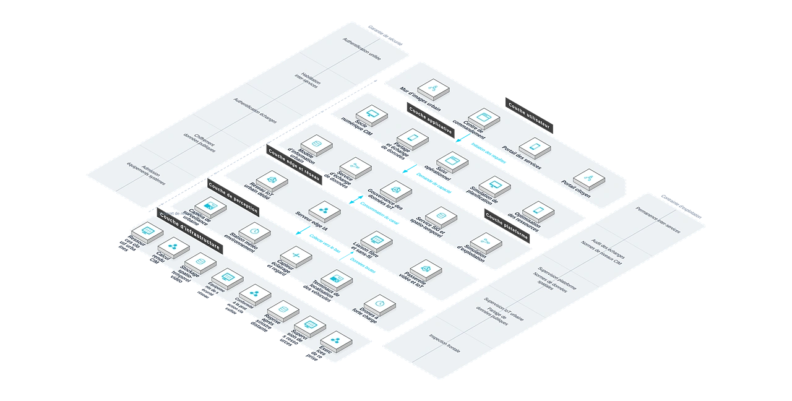

Fournit aux municipalités et autorités de gestion urbaine une solution de gouvernance intelligente à l'échelle de la ville fondée sur un socle numérique 3D CIM+BIM+GIS, répondant aux silos de données, à la perception faible du fonctionnement et à l'allocation non optimale, et soutenant une gouvernance fine et un développement durable.
Défis métier
Silos de données sévères
Les données des affaires, de la circulation, de l'environnement et de l'énergie appartiennent à des services séparés et ne peuvent être partagées.
État de fonctionnement flou
Aucune vue unifiée de la ville ; les problèmes se découvrent à l'expérience et se traitent manuellement.
Ressources publiques mal allouées
Circulation, énergie et services publics se répartissent sans données, créant un décalage entre l'offre et la demande.
Impact métier
Risque de planification élevé
Les grands projets urbains manquent de répétition et de vérification, accroissant le risque de construction et le coût des décisions.
Décisions tardives, coûts croissants
Données cloisonnées et visibilité absente : détections tardives, coordinations lentes ; les mauvaises allocations et les reprises se paient à l'échelle urbaine.
Besoins métier
Socle numérique 3D
Un socle de modèle d'information urbaine CIM+BIM+GIS est nécessaire.
Convergence multi-sources
Les données publiques, IoT et d'internet doivent être gouvernées et échangées en partage.
Capacités clés
Socle numérique CIM
La modélisation fusionnée CIM+BIM+GIS met la ville en correspondance entre espace physique et virtuel.
Partage & échange de données
Données multi-sources convergées, gouvernées et partagées entre services.
Suivi opérationnel
Analyse IA du fonctionnement urbain avec alertes automatiques sur anomalies.
Répétition de planification
Les grands plans se répètent dans l'espace virtuel pour réduire le risque de construction.
Optimisation des ressources
Ajustement par la donnée de l'offre et de la demande en trafic, énergie et services publics.
Architecture

Avantages et livraison
Avec la technologie de jumeau numérique et une expérience de projets à l'échelle de la ville, nous aidons à une gouvernance plus fine et une meilleure allocation des ressources publiques, via la construction du socle numérique, le déploiement du réseau de perception, celui de la plateforme et un partenariat opérationnel durable.
Avantages différenciants
Répétition virtuelle des plans
Les projets sont répétés virtuellement : risques détectés tôt, décisions plus scientifiques.
Construction élastique par niveaux
D'un quartier à toute la ville, au rythme maîtrisé de l'investissement.
Décisions fondées sur les données
Les ressources publiques sont allouées selon les données, réduisant les décalages offre-demande.
Expérience à l'échelle urbaine
Participation active à la numérisation des villes africaines : expertise consolidée.
Gestion unifiée en un réseau
Situation de la ville en un écran ; coordination inter-services et réponse d'urgence accélérées.
Partage ouvert des données
Données multi-sources gouvernées et partagées entre services : leur valeur est libérée.
Processus de mise en œuvre
Étude des besoins
Définir les scénarios de gouvernance, les ressources de données et le périmètre.
Socle numérique
Construire la base 3D CIM+BIM+GIS.
Réseau de capteurs
Déployer capteurs IoT, vidéo et surveillance environnementale.
Plateforme de données
Agréger, gouverner et partager les données multi-sources.
Applications intelligentes
Développer suivi et simulation par scénario.
Formation et remise
Former les exploitants municipaux avant remise.
Garantie de service
Valeur client
Gouvernance plus fine, services publics plus efficaces, allocation optimisée des ressources et qualité de vie améliorée.